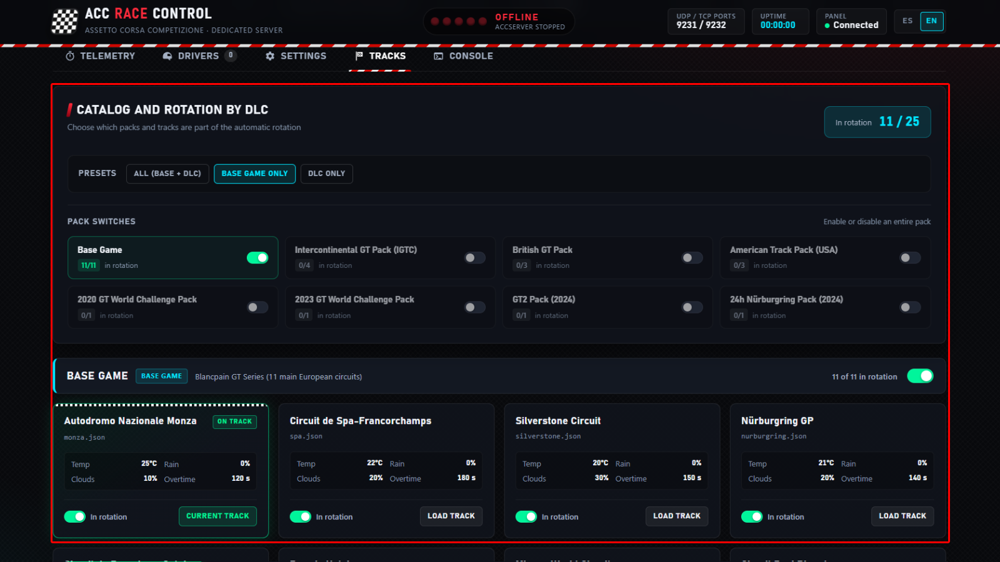
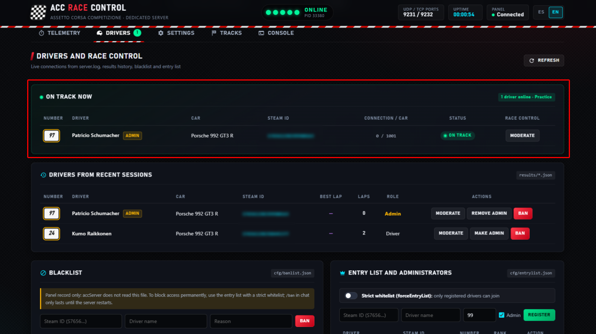
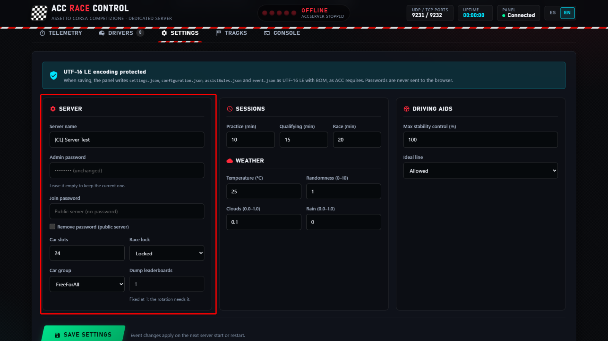
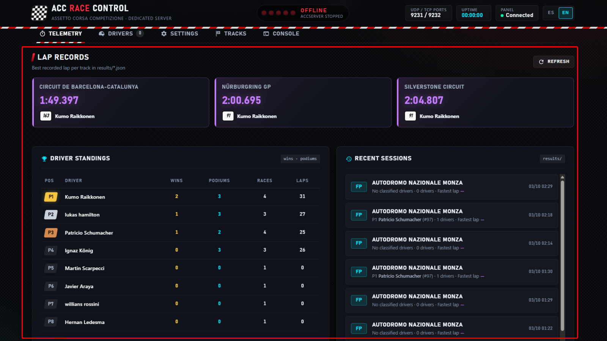
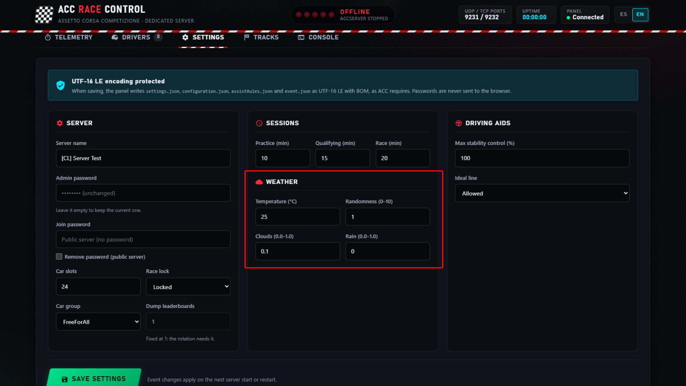
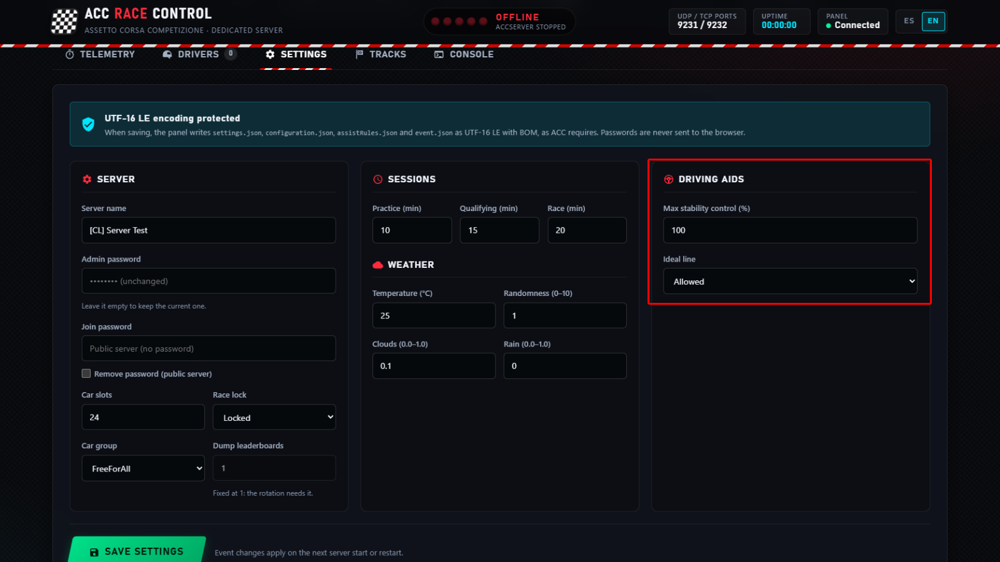
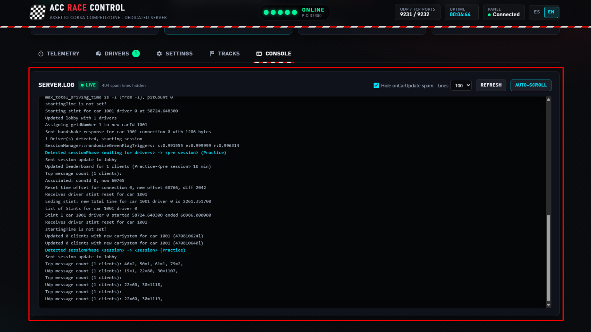
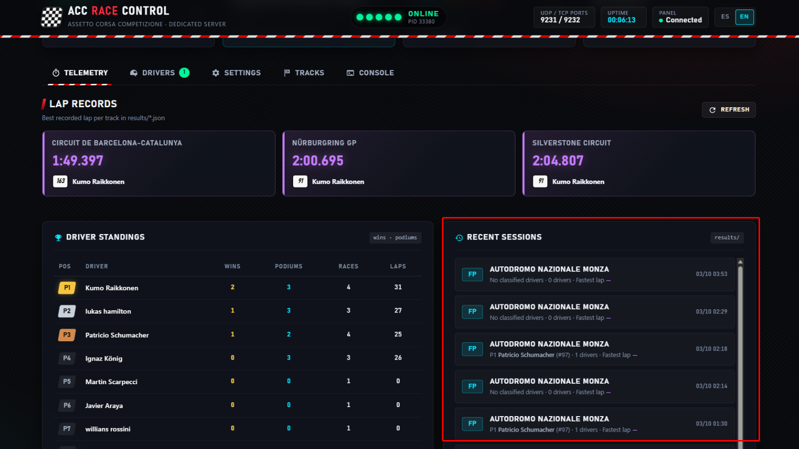
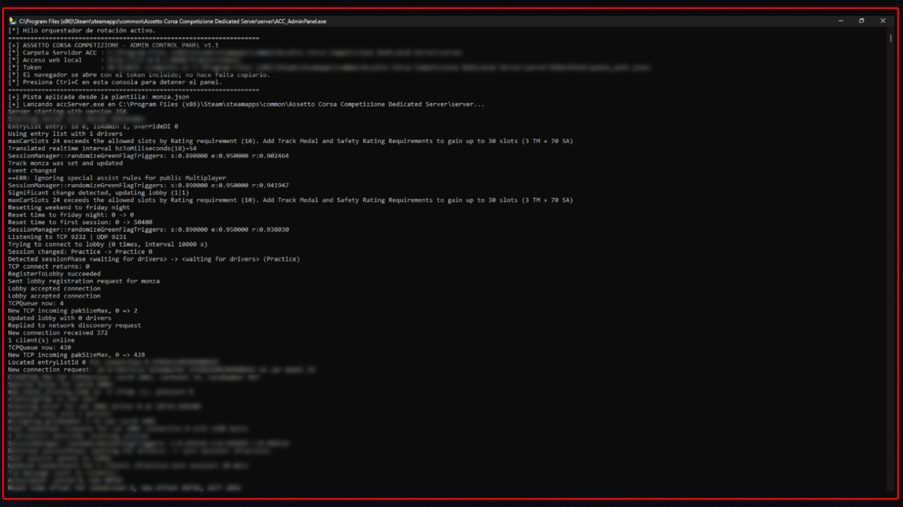

Administra tu servidor dedicado de ACC sin tocar un solo JSON
Un administrador de servidor ACC con interfaz web para admins de liga y de servidores públicos: configura sesiones, clima, entry list y contraseñas desde formularios, rota circuitos al terminar cada carrera y sigue a la parrilla en tiempo real. Cada archivo se guarda en UTF-16 LE con BOM, tal como lo espera accServer.
Configurar un servidor dedicado de ACC a mano es frágil
accServer.exe no tiene interfaz: todo vive en la carpeta cfg, en archivos JSON con un formato estricto. Un detalle mal guardado y la sesión de tu liga no sale a pista.
Editando JSON a mano
Codificación: el servidor espera UTF-16 LE con BOM. Muchos editores guardan en UTF-8 sin avisar y accServer deja de leer bien la configuración.
Sintaxis: una coma de más o una comilla sin cerrar en event.json y el servidor no arranca o ignora tus cambios justo antes de la carrera.
Sin rotación de pistas: el servidor oficial corre siempre el circuito definido en event.json. Cambiar de pista es editar el archivo y relanzar el servidor a mano.
A ciegas: saber quién está en pista implica leer la consola o server.log, que puede ir minutos por detrás.
Con AdminPanel
Formularios que generan JSON válido y lo guardan siempre en UTF-16 LE con BOM.
Arranca, detén y reinicia accServer.exe desde el navegador.
Rotación automática: al terminar la carrera final del evento aplica la siguiente pista y relanza el servidor.
Pilotos conectados y consola en tiempo real, con el spam de onCarUpdate filtrado.
Funciones
Todo lo que tu servidor necesita, en un solo panel
Herramientas pensadas para el día de carrera de una liga: preparar el evento, controlar la parrilla y pasar al siguiente circuito sin abrir el Bloc de notas.
Configuración del servidor
Nombre del servidor en el lobby, contraseña de acceso y de admin, plazas, grupo de coches, bloqueo de la sesión de carrera y duración de práctica, clasificación y carrera. Las contraseñas nunca se devuelven al navegador.
settings.json · event.json
Entry lists y administradores
Revisa la entry list de tu liga, quita pilotos, marca quién es administrador y activa forceEntryList para correr con una whitelist estricta.
entrylist.json
Clima y condiciones de sesión
Temperatura ambiente, nubosidad, nivel de lluvia y aleatoriedad del clima: desde una carrera seca y estable hasta clima dinámico que obligue a pensar la estrategia de neumáticos.
event.json
Físicas y ayudas a la conducción
Decide qué assists permite tu servidor, como el control de estabilidad o la línea ideal, sin riesgo de romper el formato del archivo.
assistRules.json
Rotación automática de pistas
Catálogo de los 25 circuitos oficiales agrupados por DLC. Al terminar la carrera, el panel aplica la siguiente pista de la rotación y relanza el servidor.
tracks_pool/
Pilotos, consola y moderación
Pilotos conectados con dorsal, coche y Steam ID, aviso de lag, consola del servidor en tiempo real y moderación: administradores y lista de baneos.
accServer.exe
Historial de carreras y récords
Lee los resultados que guarda el servidor para mostrar el historial de sesiones y los récords de vuelta de cada circuito.
results/
Acceso web protegido por token
Por defecto el panel solo escucha en tu propio PC. Con --lan lo abres desde otro equipo de tu red; en ambos casos se entra con un token de acceso.
127.0.0.1 · --lan
Rotación de pistas
Un calendario que se corre solo
accServer no cambia de circuito por sí mismo. AdminPanel vigila los resultados y, cuando termina la carrera final del evento, escribe la siguiente pista en event.json y relanza el servidor. Los fines de semana con varias carreras se respetan.
Activa o desactiva DLC completos o circuitos sueltos.
Presets: todos los circuitos, solo juego base o solo DLC.
Salta a la siguiente pista o elige una manualmente.
Catálogo de rotación25
Juego base11
Intercontinental GT Pack4
British GT Pack3
American Track Pack3
2020 GT World Challenge Pack1
2023 GT World Challenge Pack1
GT2 Pack1
24h Nürburgring Pack1

Captura pendiente: captura-rotacion.png
En vivo
La parrilla en tiempo real, no minutos después
El panel lanza accServer dentro de una pseudoconsola de Windows y lee cada línea al instante, en vez de esperar a que server.log se vuelque a disco. Conexiones, desconexiones, timeouts y cambios de sesión aparecen en segundos.
Dorsal, modelo de coche y Steam ID de cada piloto.
Aviso de LAG cuando llegan paquetes UDP con retraso.
Consola con filtro del spam de onCarUpdate.

Captura pendiente: captura-jugadores.png
Configuración
Del formulario al archivo correcto
Cada cambio se valida en el formulario y se escribe en el JSON que corresponde, con la codificación que exige accServer. Tus contraseñas no viajan de vuelta al navegador: el panel solo indica si están definidas.
settings.json, event.json y assistRules.json desde un mismo sitio.
Duración de práctica, clasificación y carrera.
Clima, plazas y grupo de coches sin buscar claves en la documentación.

Captura pendiente: captura-configuracion.png
Capturas
Así se ve el panel
Interfaz oscura estilo Race Control, pensada para tenerla abierta en un segundo monitor durante el evento.
Captura pendiente: captura-configuracion.png
Configuración del servidor

Captura pendiente: captura-entrylist.png
Entry lists y administradores

Captura pendiente: captura-clima.png
Clima y condiciones de sesión

Captura pendiente: captura-assists.png
Físicas y ayudas a la conducción
Captura pendiente: captura-rotacion.png
Rotación automática de pistas
Captura pendiente: captura-jugadores.png
Pilotos en vivo y moderación

Captura pendiente: captura-consola.png
Consola del servidor en tiempo real

Captura pendiente: captura-historial.png
Historial de carreras y récords

Captura pendiente: captura-acceso.png
Acceso web protegido por token
Cómo empezar
En pista en cuatro pasos
Sin instalador ni dependencias: el ejecutable incluye todo lo necesario.
Descarga el zip
Baja ACC_Server_AdminPanel_v1.1.zip desde la página de releases de GitHub y descomprímelo.
Colócalo en la carpeta server
Copia ACC_AdminPanel.exe dentro de la carpeta server del servidor dedicado de ACC, junto a accServer.exe.
Ejecútalo y acepta UAC
Haz doble clic y acepta el aviso de Control de cuentas de usuario: el panel necesita permisos de administrador para escribir en Program Files y gestionar accServer.exe.
Abre el panel
El navegador se abre solo con el panel y la sesión iniciada. Arranca el servidor con el botón Iniciar para ver a los pilotos en tiempo real.
¿Aún no tienes el servidor? Instálalo desde Steam: Biblioteca → Herramientas → Assetto Corsa Competizione Dedicated Server.
FAQ
Preguntas frecuentes
¿Necesito instalar Python?
No. ACC_AdminPanel.exe incluye su propio intérprete de Python empaquetado. Solo lo necesitas si prefieres ejecutar el panel desde el código fuente del repositorio, y aun así no hay dependencias externas que instalar.
¿Es gratis?
Sí. Es código abierto bajo licencia MIT: puedes usarlo, modificarlo y redistribuirlo, también en los servidores de tu liga.
¿Es una herramienta oficial de Kunos?
No. Es una herramienta independiente creada por la comunidad. No está afiliada, respaldada ni patrocinada por Kunos Simulazioni ni por Digital Bros. Assetto Corsa Competizione es una marca registrada de sus respectivos propietarios.
¿Por qué pide permisos de administrador?
Steam instala el servidor dedicado dentro de Program Files, donde Windows solo permite escribir con permisos elevados. El panel los necesita para guardar los archivos de la carpeta cfg y para iniciar y detener accServer.exe.
¿Funciona en LAN?
Sí. Por defecto el panel solo acepta conexiones desde el propio PC. Ejecútalo con --lan para abrirlo desde otro equipo de tu red; el acceso sigue protegido por token. La conexión es HTTP sin cifrar, así que úsalo solo en redes de confianza. Con --new-token generas un token nuevo.